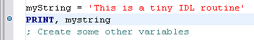
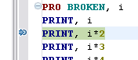

A breakpoint is a marker in an IDL source code file that tells IDL to halt execution temporarily, allowing you to inspect the state of program variables in the program unit where the breakpoint occurred. Breakpoints allow you to control the flow of execution of your IDL program, stopping and starting at will.
You can set a breakpoint in a file opened in an editor window by placing the cursor in the line where you want the breakpoint to appear and doing any of the following:
| • | Double-clicking in the grey gutter at the left edge of the editor window |
| • | Selecting Toggle Breakpoint from the Run menu |
| • | Right-clicking in the grey gutter at the left edge of the editor window to display the context menu, then selecting Toggle Breakpoint |
| • | Pressing Ctrl-Shift-B |
Note: You can also set breakpoints at the IDL Command Line using the BREAKPOINT procedure.
When you set a breakpoint, a blue dot is placed in the grey gutter at the left edge of the editor window.

When IDL executes a routine for which you have set a breakpoint, execution halts. The Debug view displays. An editor window containing the code for the routine that was executing is displayed, and an arrow in the left-hand gutter indicates the line of code where execution stopped.

Breakpoints can be:
| • | Enabled. Execution will halt if an active breakpoint is encountered. |
| • | Disabled. Execution will not halt, but the location of the breakpoint will be preserved. |
You can change between the Enable and Disabled states by selecting Toggle Breakpoint from the Run menu or double-clicking on the grey gutter at the left edge of the editor window.
Note: The IDL Workbench remembers breakpoints set in a file between IDL sessions. This means that you can close the workbench, and your breakpoints will still be present when you reopen the file that contains them.
Setting a breakpoint in your code allows you to suspend execution. Once execution is suspended, it is often useful to “step” through the code one statement at a time, inspecting the state of the application as you proceed. IDL’s stepping features allow you to do this without the need to set a breakpoint on each line.
You can use any of the following operations to control execution of your code. Invoke these operations either by selecting an item from the Run menu or clicking a toolbar button. Some operations also have keyboard shortcuts or executive commands.
| Breakpoint operation | Description | Keyboard shortcut | Executive command |
|---|---|---|---|
| Resume | Resumes program execution. | .CONTINUE | |
| Suspend | Temporarily halts program execution. | ||
| Terminate |
Terminates program execution, returning the calling context. This option issues the following commands: RETALL WIDGET_CONTROL, /RESET CLOSE, /FORCE, /ALL HEAP_GC |
CTRL-F2 | |
| Step Into | Executes the current statement. If the current statement calls another routine written in IDL code, execution "steps into" the called routine and stops. |
F5 | .STEP |
| Step Over |
Executes the current statement. If the current statement calls another routine written in IDL code, the entire called routine is executed before execution stops again. |
F6 | .STEPOVER |
| Step Return | Executes all statements until the end of the current routine. This has the effect of returning to the calling routine. | F7 | .RETURN |
| Skip Next Statement |
Skips the current line of code (does not execute it). This is useful for moving past a program statement that causes an error. |
CTRL-Shift-F6 | .SKIP |
| Run to Line | Executes statements up to the statement on which the cursor is positioned in the editor. | CTRL-R |